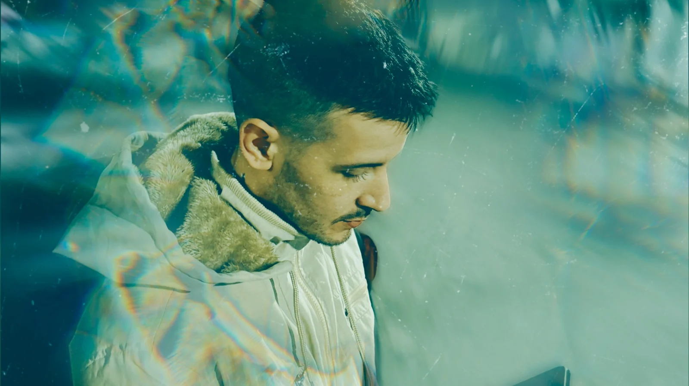
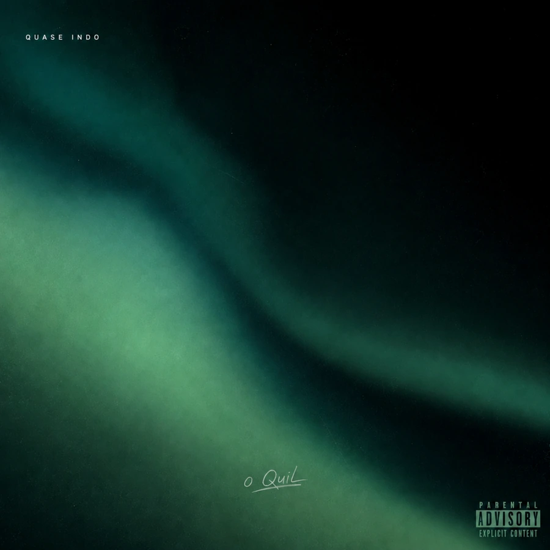

ÚLTIMO LANÇAMENTO5521
Quase Indo
o Quil / Dark R&B
Ouça o single Quase Indo.

O QUIL / DARK R&B
Deslize para entrar
01 / Trajetória
This Is o Quil
A trajetória de o Quil
A história de Fillipe Queiroz e dos caminhos que construíram o artista.
- Início
Fillipe Queiroz
A caminhada na música começa com o próprio nome, Fillipe Queiroz.
- 2014
- 2015
- 2026
Quase Indo
Na fase atual, o Quil trabalha o Dark R&B em Quase Indo, Se Move, TAG e Consequência de Estar Acordado.

Explorar os lançamentos
02 / Singles · 2026
Lançamentos
Os singles mais recentes, em ordem de lançamento.

Se Move

TAG

Consequência de Estar Acordado
Os links de cada faixa abrem uma busca na plataforma; não são URLs diretas verificadas.
Capas oficiais em alta resolução e links de reprodução das plataformas. Quando não há um endereço individual confirmado, o link direciona ao canal ou à busca da faixa.
Arquivo de lançamentos
Mais lançamentos para explorar. Os botões abaixo abrem buscas nas plataformas, pois os links individuais ainda precisam ser conferidos.
 Lost Tracks, Vol. 0
Lost Tracks, Vol. 0 Lost Tracks
Lost Tracks Sombras do Subconsciente
Sombras do Subconsciente03 / Arquivo
Na imprensa.
Arquivo de matérias e referências editoriais sobre os lançamentos e a trajetória do artista.
Globo Esporte
CS:GO: familiares, companheiros e grandes nomes do cenário homenageiam brutt nas redes sociais
A matéria registra as homenagens a brutt e menciona o rapper o Quil entre os irmãos que prestaram homenagem.
Popload Beats
Popload Beats apresenta: Fillipe Queiroz
Entrevista sobre Sinergia, produção coletiva e os primeiros passos de Fillipe Queiroz com a NAS.
VICE / Noisey
‘Por Via das Dúvidas’ É o Novo Disco do Rapper Fillipe Queiroz
A matéria apresenta o primeiro álbum e relembra Sinergia, EP de estreia lançado em 2014.
VICE / Noisey
Ouça Sinergia, primeiro EP do carioca Fillipe Queiroz
Matéria original dedicada ao EP de estreia. O endereço legado do Noisey foi localizado como link publicado em outra reportagem da VICE; a página original não abriu na consulta.
VICE
Encontros e Desencontros: Um Mapa dos Coletivos Brasileiros de Música Eletrônica Independente
A reportagem apresenta o selo NAS, cita Filipe Queiroz e destaca Sinergia como exemplo do encontro entre rap e música eletrônica.